국악공연 진연
2026-01-01 ~ 2026-12-31 · 서울
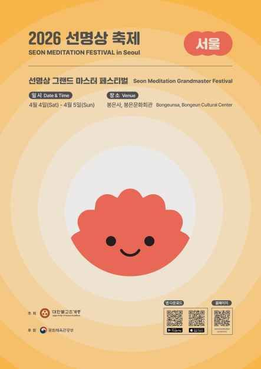
2026 국제선명상대회
2026-04-03 ~ 2026-11-12 · 서울
나오라쇼
2026-04-25 ~ 2026-10-31 · 강원
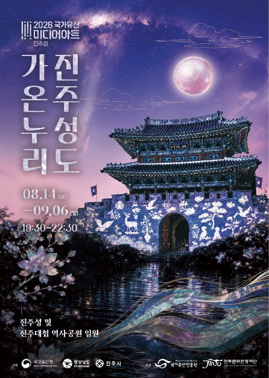
국가유산 미디어아트 진주성
2026-08-14 ~ 2026-09-06 · 경남
서천 홍원항 자연산 전어 꽃게 축제
2026-08-22 ~ 2026-09-06 · 충남
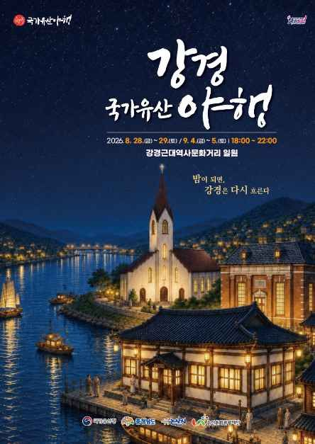
강경 국가유산야행
2026-08-28 ~ 2026-09-05 · 충남
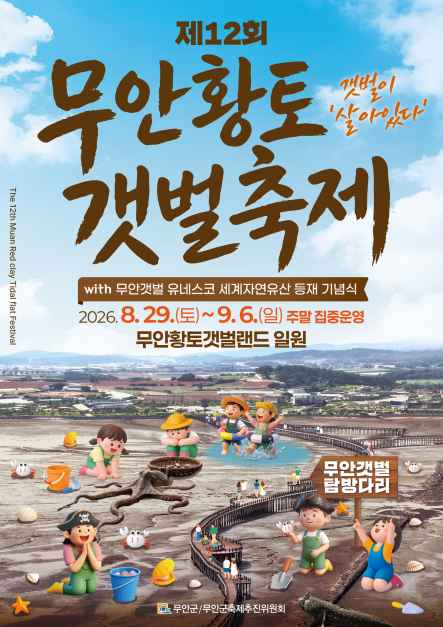
무안 황토 갯벌축제
2026-08-29 ~ 2026-09-06 · 전남광주
트레저헌터 in 진안
2026-08-29 ~ 2026-09-19 · 전북
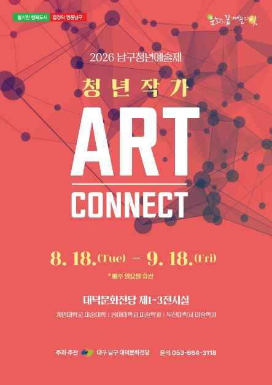
남구청년예술제
2026-09-01 ~ 2026-09-11 · 대구
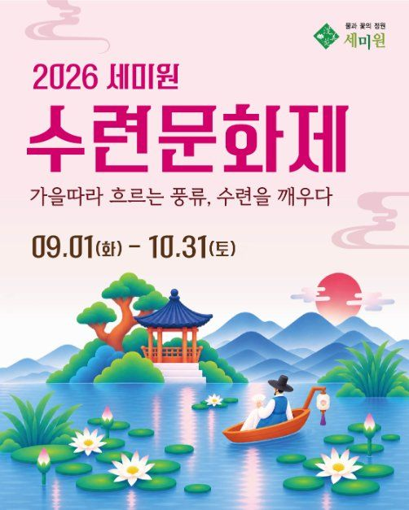
세미원 수련문화제
2026-09-01 ~ 2026-10-31 · 경기
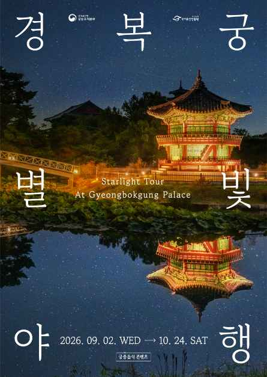
경복궁 별빛야행
2026-09-02 ~ 2026-10-24 · 서울
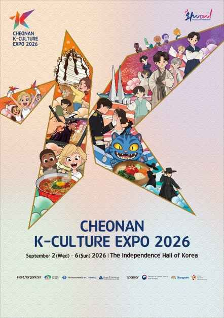
2026 천안 K-컬처박람회
2026-09-02 ~ 2026-09-06 · 충남
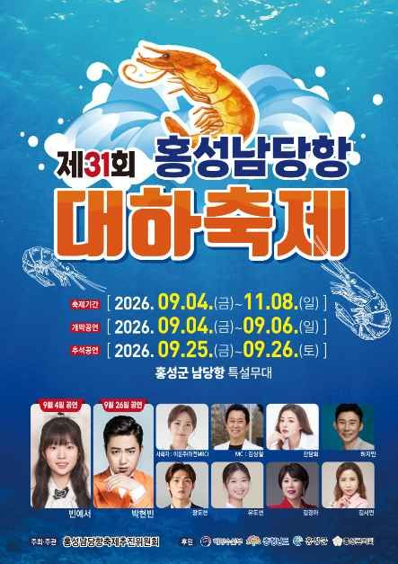
홍성남당항 대하축제
2026-09-04 ~ 2026-11-08 · 충남
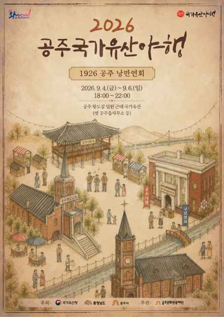
공주 국가유산야행
2026-09-04 ~ 2026-09-06 · 충남
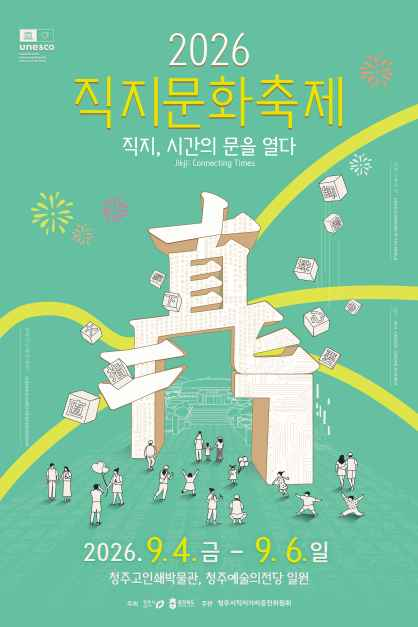
직지문화축제
2026-09-04 ~ 2026-09-06 · 충북
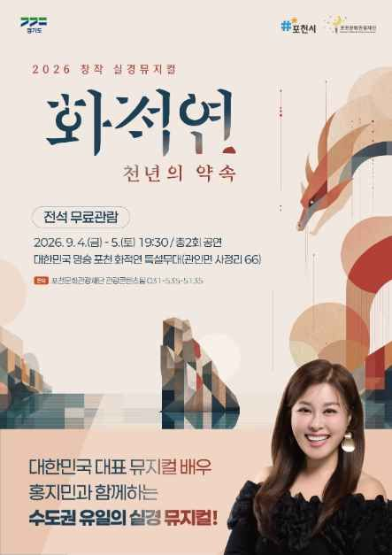
2026 창작 실경뮤지컬 〈화적연 천년의 약속〉
2026-09-04 ~ 2026-09-05 · 경기
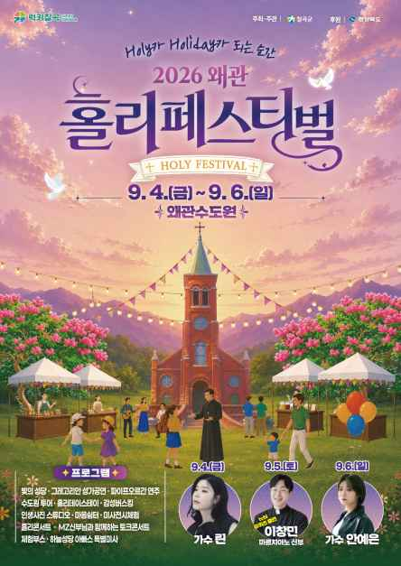
왜관 홀리 페스티벌
2026-09-04 ~ 2026-09-06 · 경북
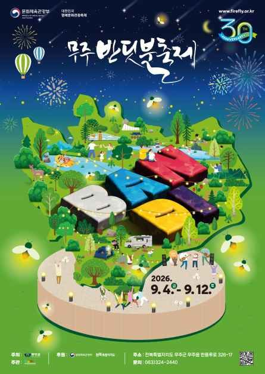
무주반딧불축제
2026-09-04 ~ 2026-09-12 · 전북
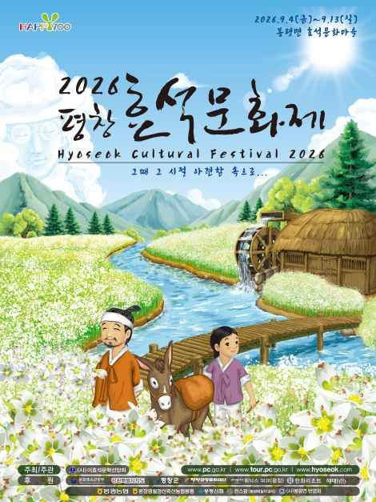
평창효석문화제
2026-09-04 ~ 2026-09-13 · 강원
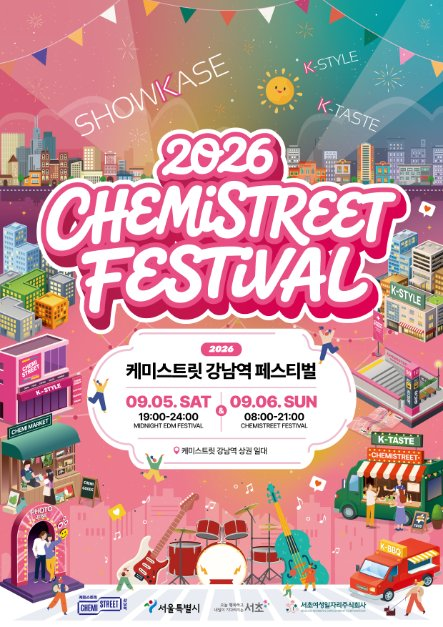
케미스트릿 강남역 페스티벌
2026-09-05 ~ 2026-09-06 · 서울
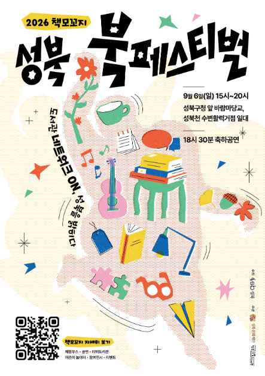
성북 책모꼬지 북페스티벌
2026-09-06 ~ 2026-09-06 · 서울
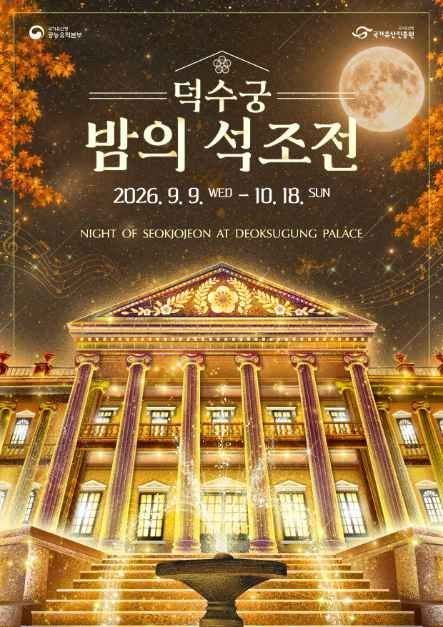
덕수궁 밤의 석조전
2026-09-09 ~ 2026-10-18 · 서울
서울국제작가축제
2026-09-11 ~ 2026-09-16 · 서울
무창포 신비의바닷길축제
2026-09-11 ~ 2026-09-13 · 충남
삼토 페스티벌
2026-09-11 ~ 2026-09-13 · 강원
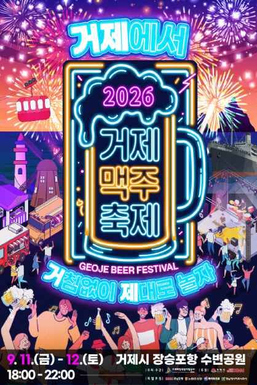
거제맥주축제
2026-09-11 ~ 2026-09-12 · 경남
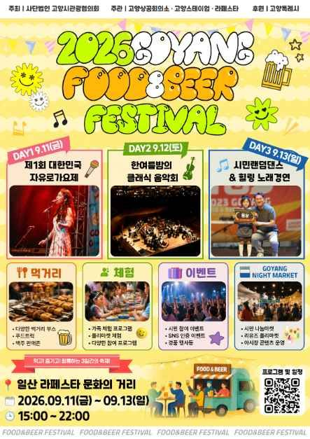
고양 푸드앤비어페스티벌
2026-09-11 ~ 2026-09-13 · 경기
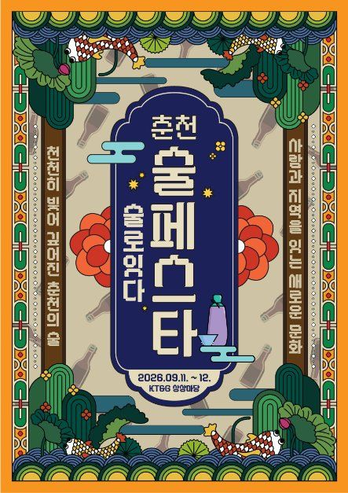
춘천 술 페스타
2026-09-11 ~ 2026-09-12 · 강원
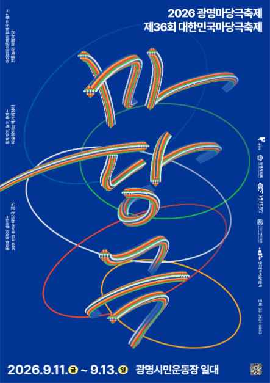
광명마당극축제X대한민국마당극축제
2026-09-11 ~ 2026-09-13 · 경기
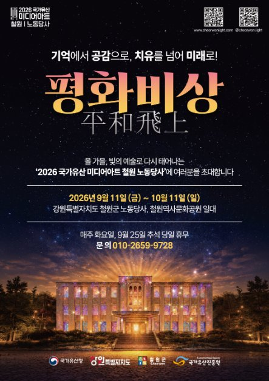
국가유산 미디어아트 철원 노동당사
2026-09-11 ~ 2026-10-11 · 강원
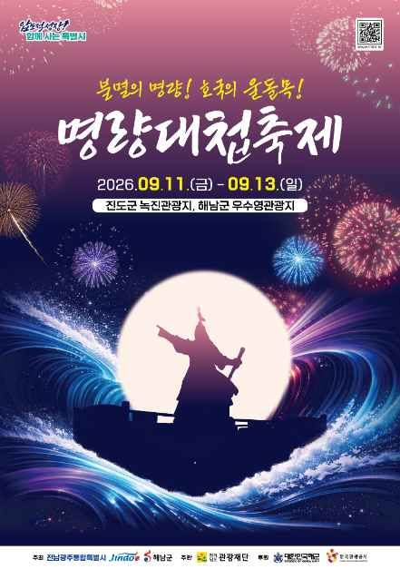
명량대첩축제
2026-09-11 ~ 2026-09-13 · 전남광주
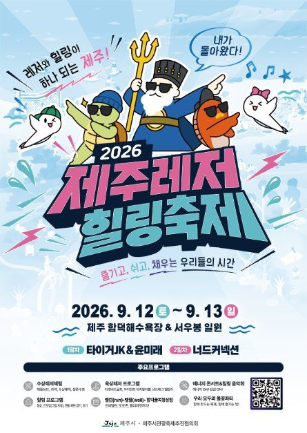
제주레저힐링축제
2026-09-12 ~ 2026-09-13 · 제주
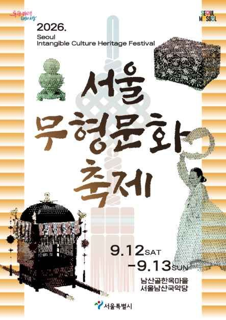
서울무형문화축제
2026-09-12 ~ 2026-09-13 · 서울
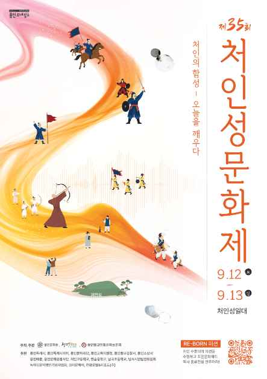
처인성문화제
2026-09-12 ~ 2026-09-13 · 경기
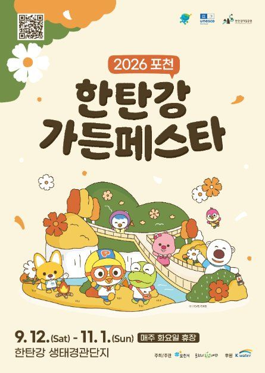
포천 한탄강 가든페스타
2026-09-12 ~ 2026-11-01 · 경기
파주 케이컬처페스티벌
2026-09-12 ~ 2026-09-12 · 경기
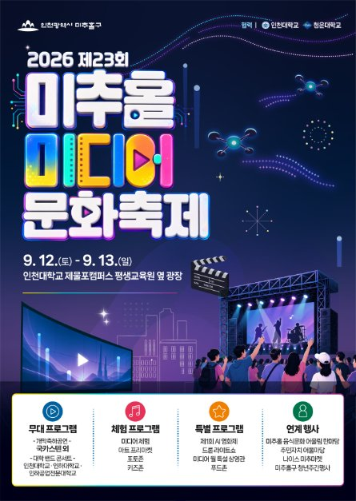
미추홀미디어문화축제
2026-09-12 ~ 2026-09-13 · 인천
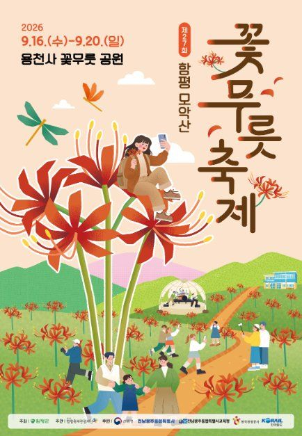
함평모악산 꽃무릇축제
2026-09-16 ~ 2026-09-20 · 전남광주
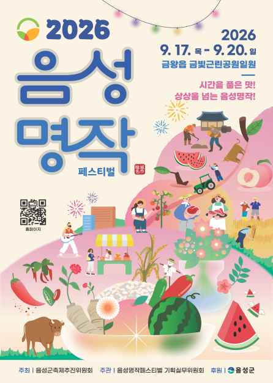
음성명작페스티벌
2026-09-17 ~ 2026-09-20 · 충북
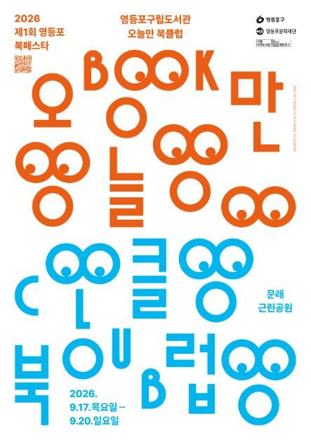
영등포 북페스타 오늘만 북클럽
2026-09-17 ~ 2026-09-20 · 서울
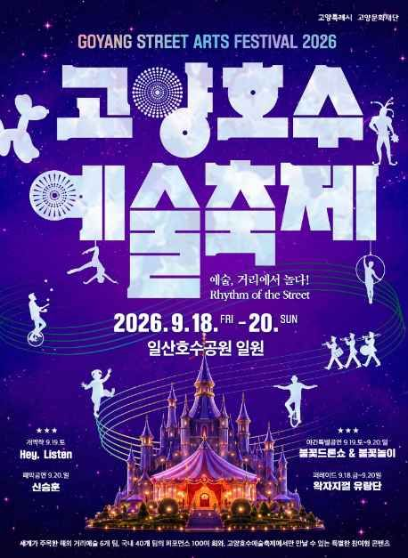
고양호수예술축제
2026-09-18 ~ 2026-09-20 · 경기
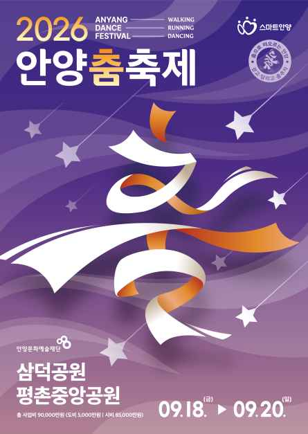
안양춤축제
2026-09-18 ~ 2026-09-20 · 경기
진안홍삼축제
2026-09-18 ~ 2026-09-20 · 전북
과천공연예술축제
2026-09-18 ~ 2026-09-20 · 경기
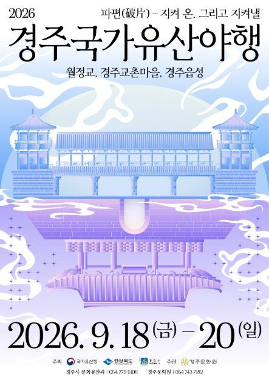
경주 국가유산야행
2026-09-18 ~ 2026-09-20 · 경북
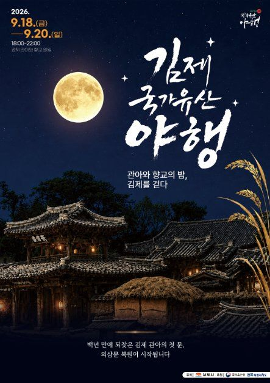
김제 국가유산야행
2026-09-18 ~ 2026-09-20 · 전북
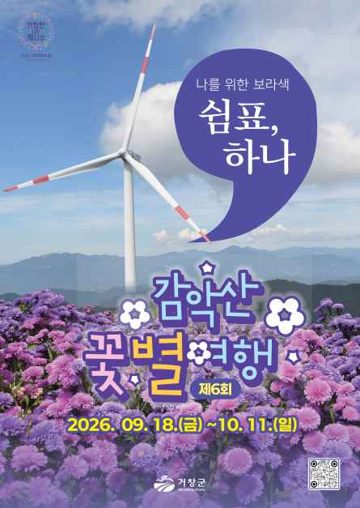
감악산 꽃별 여행
2026-09-18 ~ 2026-10-11 · 경남
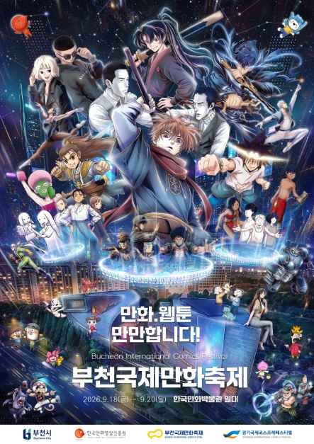
부천국제만화축제
2026-09-18 ~ 2026-09-20 · 경기
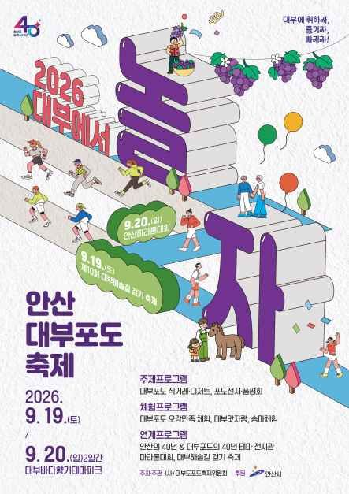
안산 대부포도축제
2026-09-19 ~ 2026-09-20 · 경기
서리풀뮤직페스티벌
2026-09-19 ~ 2026-09-20 · 서울
대구메이커페스타
2026-09-19 ~ 2026-09-20 · 대구
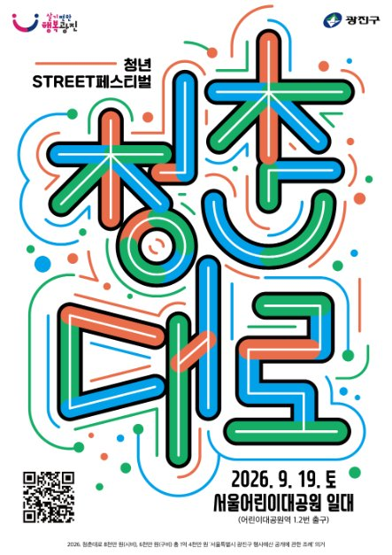
청춘대로
2026-09-19 ~ 2026-09-19 · 서울
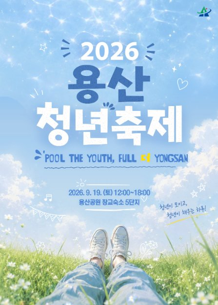
용산청년축제
2026-09-19 ~ 2026-09-19 · 서울
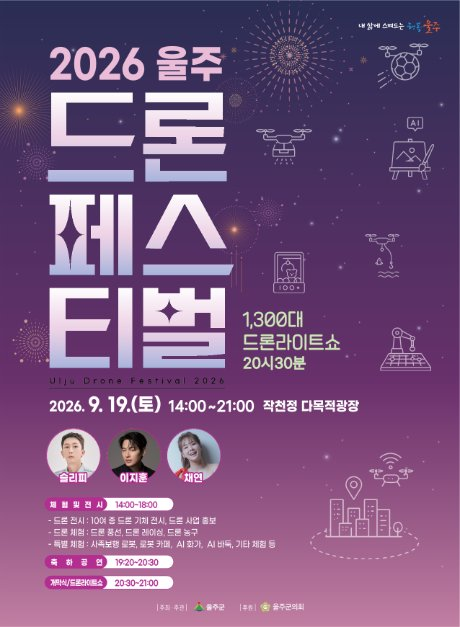
울주 드론 페스티벌
2026-09-19 ~ 2026-09-19 · 울산
기장군반려동물문화축제
2026-09-19 ~ 2026-09-19 · 부산
광명시 책축제
2026-09-19 ~ 2026-09-19 · 경기
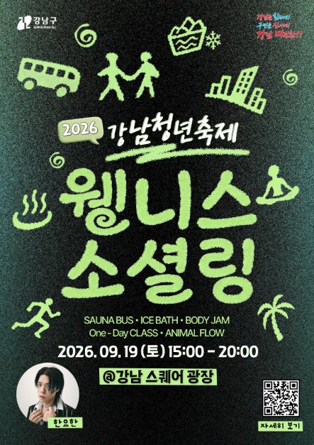
강남청년축제
2026-09-19 ~ 2026-09-19 · 서울
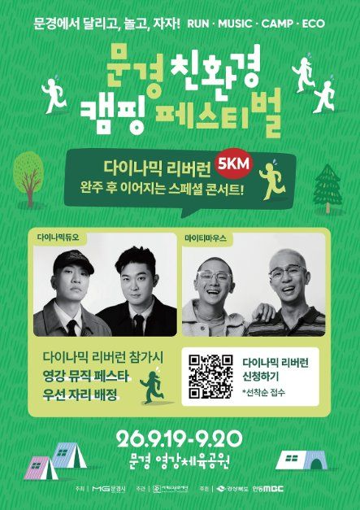
2026 문경 친환경캠핑 페스티벌
2026-09-19 ~ 2026-09-20 · 경북
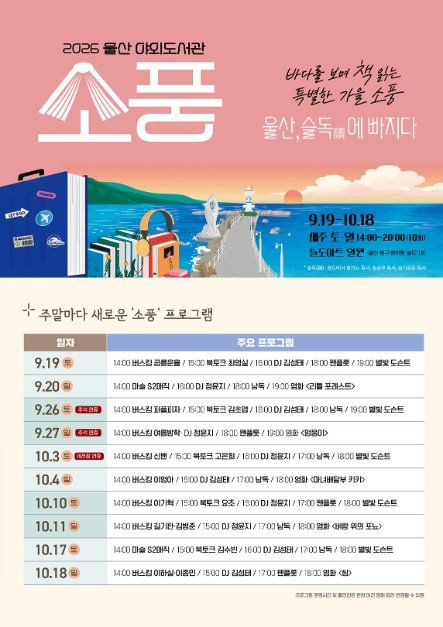
2026 울산야외도서관 소풍
2026-09-19 ~ 2026-10-18 · 울산
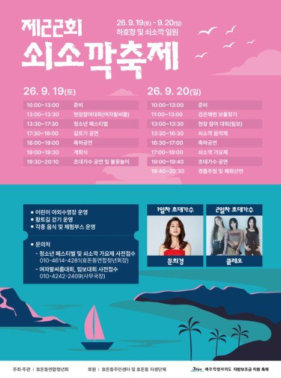
쇠소깍축제
2026-09-19 ~ 2026-09-20 · 제주
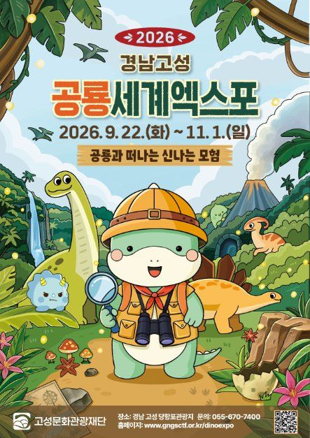
경남고성공룡세계엑스포
2026-09-22 ~ 2026-11-01 · 경남
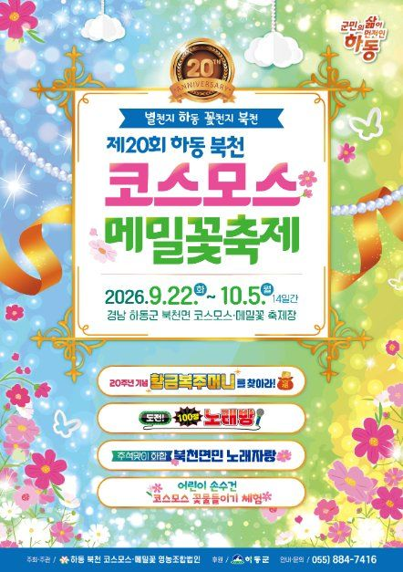
하동 북천 코스모스 메밀꽃 축제
2026-09-22 ~ 2026-10-05 · 경남
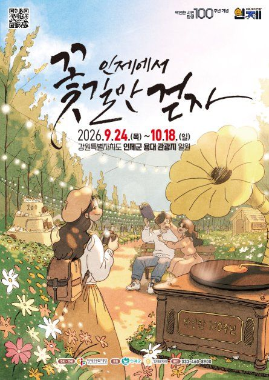
인제가을꽃축제
2026-09-24 ~ 2026-10-18 · 강원
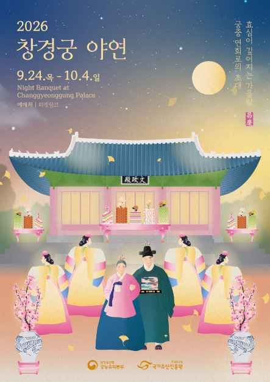
창경궁 야연
2026-09-24 ~ 2026-10-04 · 서울
의령기강리치꽃축제
2026-09-24 ~ 2026-10-25 · 경남
안동국제탈춤페스티벌
2026-09-24 ~ 2026-10-04 · 경북
예천 삼강나루 주막축제
2026-09-25 ~ 2026-09-27 · 경북
고양가을꽃축제
2026-10-01 ~ 2026-10-11 · 경기
지상군페스티벌
2026-10-01 ~ 2026-10-05 · 충남
계룡軍문화축제
2026-10-01 ~ 2026-10-05 · 충남
정선아리랑제
2026-10-01 ~ 2026-10-04 · 강원
천안흥타령춤축제
2026-10-01 ~ 2026-10-05 · 충남
김제지평선축제
2026-10-01 ~ 2026-10-05 · 전북
부평풍물대축제
2026-10-02 ~ 2026-10-04 · 인천
부산국제록페스티벌
2026-10-02 ~ 2026-10-04 · 부산
군산시간여행축제
2026-10-02 ~ 2026-10-05 · 전북
전주국제그림책도서전
2026-10-02 ~ 2026-10-25 · 전북
영천한방축제
2026-10-02 ~ 2026-10-04 · 경북
양재아트살롱
2026-10-02 ~ 2026-10-25 · 서울
부안 곰소젓갈&왕새우축제
2026-10-02 ~ 2026-10-04 · 전북
문경 가은아자개 장터축제
2026-10-02 ~ 2026-10-04 · 경북
안성맞춤 남사당 바우덕이축제
2026-10-02 ~ 2026-10-05 · 경기
소래포구축제
2026-10-02 ~ 2026-10-04 · 인천
대전효문화뿌리축제
2026-10-02 ~ 2026-10-04 · 대전
삼랑성역사문화축제
2026-10-03 ~ 2026-10-11 · 인천
용인사이버과학축제
2026-10-03 ~ 2026-10-04 · 경기
의성슈퍼푸드마늘축제
2026-10-03 ~ 2026-10-05 · 경북
성주가야산황금들녘메뚜기축제
2026-10-03 ~ 2026-10-04 · 경북
포천시 청년축제
2026-10-03 ~ 2026-10-03 · 경기
용인청년페스티벌
2026-10-03 ~ 2026-10-04 · 경기
동대문페스티벌
2026-10-03 ~ 2026-10-03 · 서울
과천청년축제
2026-10-03 ~ 2026-10-03 · 경기
태백제
2026-10-03 ~ 2026-10-04 · 강원
국가유산 미디어아트 청주
2026-10-03 ~ 2026-10-24 · 충북
진주남강유등축제
2026-10-03 ~ 2026-10-18 · 경남
강남페스티벌
2026-10-03 ~ 2026-10-05 · 서울
백제문화제
2026-10-03 ~ 2026-10-11 · 충남
수원화성문화제
2026-10-04 ~ 2026-10-11 · 경기
궁중문화축전
2026-10-07 ~ 2026-10-11 · 서울
나주영산강축제
2026-10-07 ~ 2026-10-11 · 전남광주
2026 D.FESTA 소극장축제
2026-10-07 ~ 2026-10-25 · 서울
탄광문화축제
2026-10-07 ~ 2026-10-10 · 강원
광주 추억의 충장축제
2026-10-07 ~ 2026-10-11 · 전남광주
우륵문화제
2026-10-08 ~ 2026-10-11 · 충북
전주한지문화축제
2026-10-08 ~ 2026-10-10 · 전북
서산해미읍성축제
2026-10-09 ~ 2026-10-11 · 충남
세종한글축제
2026-10-09 ~ 2026-10-11 · 세종
대전 서구 아트페스티벌
2026-10-09 ~ 2026-10-11 · 대전
제76주년 K-밀리터리 페스티벌：춘천대첩
2026-10-09 ~ 2026-10-11 · 강원
대장경기록문화축제
2026-10-09 ~ 2026-11-01 · 경남
2026 광주사운드파크페스티벌
2026-10-09 ~ 2026-10-10 · 전남광주
화순적벽문화축제
2026-10-09 ~ 2026-10-10 · 전남광주
천안 북 페스티벌
2026-10-09 ~ 2026-10-09 · 충남
강릉 빵굽는 마을, 오죽
2026-10-09 ~ 2026-10-11 · 강원
국가유산 미디어아트 여수 진남관
2026-10-09 ~ 2026-11-08 · 전남광주
포항 낙화의 밤
2026-10-09 ~ 2026-10-17 · 경북
포은문화제
2026-10-10 ~ 2026-10-11 · 경기
안양청년축제
2026-10-10 ~ 2026-10-10 · 경기
대전 중구 북페스티벌
2026-10-10 ~ 2026-10-11 · 대전
양재천을 품은 양재도서관 「물길 따라 그림책 여행」
2026-10-10 ~ 2026-11-08 · 서울
장항 1931 밤의 기행
2026-10-10 ~ 2026-10-31 · 충남
칠곡낙동강평화축제
2026-10-15 ~ 2026-10-18 · 경북
광주서창억새축제
2026-10-15 ~ 2026-10-18 · 전남광주
영동난계국악축제
2026-10-15 ~ 2026-10-18 · 충북
2026 대한민국 AI 콘텐츠 어워즈
2026-10-15 ~ 2026-10-16 · 경기
봉화송이축제
2026-10-15 ~ 2026-10-18 · 경북
고창모양성제
2026-10-15 ~ 2026-10-19 · 전북
순창장류축제
2026-10-15 ~ 2026-10-18 · 전북
금정산성축제
2026-10-16 ~ 2026-10-18 · 부산
정동문화축제
2026-10-16 ~ 2026-10-17 · 서울
낙동강 구포나루 축제
2026-10-16 ~ 2026-10-18 · 부산
동래읍성역사축제
2026-10-16 ~ 2026-10-18 · 부산
관악강감찬축제
2026-10-16 ~ 2026-10-18 · 서울
2026 대한민국 산림박람회
2026-10-16 ~ 2026-10-18 · 충북
경산 대추축제 & 농산물 한마당
2026-10-16 ~ 2026-10-18 · 경북
연천 국화축제
2026-10-16 ~ 2026-10-25 · 경기
2026 문화의 달 여수
2026-10-16 ~ 2026-10-19 · 전남광주
NS푸드페스타
2026-10-16 ~ 2026-10-17 · 전북
영덕 웰니스페스타
2026-10-16 ~ 2026-10-18 · 경북
드림파크 국화축제
2026-10-16 ~ 2026-10-25 · 인천
가락 옥토버페스트
2026-10-16 ~ 2026-10-18 · 서울
세계문화유산 화순 고인돌 가을꽃 축제
2026-10-16 ~ 2026-10-25 · 전남광주
부산돼지국밥대전
2026-10-16 ~ 2026-10-18 · 부산
정선 국가유산야행
2026-10-16 ~ 2026-10-18 · 강원
양양송이연어축제
2026-10-16 ~ 2026-10-18 · 강원
포천 산정호수 명성산 억새꽃축제
2026-10-16 ~ 2026-10-18 · 경기
탐라문화제
2026-10-17 ~ 2026-10-21 · 제주
다산정약용문화제
2026-10-17 ~ 2026-10-18 · 경기
세계유산 조선왕릉축전
2026-10-17 ~ 2026-10-25 · 경기
대전 빵 축제
2026-10-17 ~ 2026-10-18 · 대전
한강페스티벌
2026-10-17 ~ 2026-10-25 · 서울
MOIM International
2026-10-17 ~ 2026-10-17 · 경기
노원 북 페스티벌
2026-10-17 ~ 2026-10-18 · 서울
구미푸드페스티벌
2026-10-17 ~ 2026-10-18 · 경북
전포커피축제
2026-10-17 ~ 2026-10-18 · 부산
황매산 억새축제
2026-10-17 ~ 2026-10-25 · 경남
원주농협 치악산 고구마축제
2026-10-17 ~ 2026-10-18 · 강원
대구 동구 어울림한마당
2026-10-17 ~ 2026-10-17 · 대구
홍성 백반 페스타
2026-10-17 ~ 2026-10-18 · 충남
동물행복페스타
2026-10-17 ~ 2026-10-18 · 서울
영등포구 미래인재 과학축제
2026-10-17 ~ 2026-10-17 · 서울
동대문구 청소년 페스티벌
2026-10-17 ~ 2026-10-17 · 서울
205 칠곡 문화거리 페스타
2026-10-17 ~ 2026-10-18 · 경북
강릉커피축제
2026-10-21 ~ 2026-10-25 · 강원
예산장터 삼국축제
2026-10-22 ~ 2026-10-25 · 충남
여주오곡나루축제
2026-10-23 ~ 2026-10-25 · 경기
문화다양성축제 MAMF(맘프)
2026-10-23 ~ 2026-10-25 · 경남
라라라 페스티벌
2026-10-23 ~ 2026-10-25 · 부산
연천율무축제
2026-10-23 ~ 2026-10-25 · 경기
대덕대청호물결축제
2026-10-23 ~ 2026-10-25 · 대전
UN평화축제
2026-10-23 ~ 2026-10-25 · 부산
울산 중구 국가유산야행
2026-10-23 ~ 2026-10-25 · 울산
김천김밥축제
2026-10-23 ~ 2026-10-25 · 경북
전주막걸리축제
2026-10-23 ~ 2026-10-24 · 전북
원주만두축제
2026-10-23 ~ 2026-10-25 · 강원
강원한돈페스타
2026-10-23 ~ 2026-10-25 · 강원
서귀포칠십리축제
2026-10-23 ~ 2026-10-25 · 제주
광주김치축제
2026-10-23 ~ 2026-10-25 · 전남광주
익산천만송이 국화축제
2026-10-23 ~ 2026-11-01 · 전북
대한민국 국향대전
2026-10-23 ~ 2026-11-08 · 전남광주
제주마축제
2026-10-24 ~ 2026-10-25 · 제주
도곡 메타세쿼이아 로드 페스타
2026-10-24 ~ 2026-10-24 · 서울
제주독서대전
2026-10-24 ~ 2026-10-25 · 제주
영등포선유도원축제
2026-10-24 ~ 2026-10-25 · 서울
한미친선 문화 한마당
2026-10-24 ~ 2026-10-25 · 경기
순천 낙안읍성 민속문화축제
2026-10-24 ~ 2026-10-25 · 전남광주
양천가족 거리축제
2026-10-25 ~ 2026-10-25 · 서울
부산고등어축제
2026-10-30 ~ 2026-11-01 · 부산
예천활축제
2026-10-30 ~ 2026-11-01 · 경북
목포 국가유산야행
2026-10-30 ~ 2026-11-01 · 전남광주
예산사과축제
2026-10-30 ~ 2026-10-31 · 충남
마토예술제
2026-10-31 ~ 2026-10-31 · 경기
밀양 매운맛 축제
2026-10-31 ~ 2026-11-01 · 경남
마산가고파국화축제
2026-10-31 ~ 2026-11-08 · 경남
구미라면 축제
2026-11-06 ~ 2026-11-08 · 경북
어부장터X포트빌리지 통영
2026-11-06 ~ 2026-11-08 · 경남
의좋은 형제 축제
2026-11-07 ~ 2026-11-08 · 충남
부산불꽃축제
2026-11-07 ~ 2026-11-07 · 부산
산북AI김장문화축제
2026-11-07 ~ 2026-11-08 · 경기
고흥유자축제
2026-11-12 ~ 2026-11-15 · 전남광주
원주 국가유산야행
2026-09-04 ~ 2026-09-06 · 강원
예산황새축제
2026-09-05 ~ 2026-09-06 · 충남
국가유산 미디어아트 부여 정림사지
2026-09-07 ~ 2026-09-27 · 충남
장수한우랑사과랑축제
2026-09-10 ~ 2026-09-13 · 전북
신촌글로벌대학문화축제
2026-09-11 ~ 2026-09-13 · 서울
용산 국가유산야행
2026-09-11 ~ 2026-09-12 · 서울
대전 중구 국가유산야행
2026-09-11 ~ 2026-09-13 · 대전
글로컬 문화 in(人) 남산 페스티벌
2026-09-12 ~ 2026-09-12 · 부산
동대문구 북 페스티벌
2026-09-12 ~ 2026-09-12 · 서울
시흥갯골축제
2026-09-18 ~ 2026-09-20 · 경기
수원화성 미디어아트
2026-09-19 ~ 2026-10-06 · 경기
하남이성산성문화제
2026-09-19 ~ 2026-09-20 · 경기
청년축제 유플페
2026-09-19 ~ 2026-09-19 · 경기
설악문화제
2026-10-02 ~ 2026-10-04 · 강원
금산세계인삼축제
2026-10-02 ~ 2026-10-11 · 충남
산청한방약초축제
2026-10-02 ~ 2026-10-11 · 경남
페스티벌 광명
2026-10-03 ~ 2026-10-04 · 경기
영주 풍기인삼축제
2026-10-03 ~ 2026-10-11 · 경북
임실N치즈축제
2026-10-08 ~ 2026-10-11 · 전북
흥부제
2026-10-09 ~ 2026-10-11 · 전북
웰컴투신관동
2026-10-09 ~ 2026-10-10 · 충남
함안 국가유산야행
2026-10-09 ~ 2026-10-11 · 경남
파주페어 북앤컬처
2026-10-09 ~ 2026-10-18 · 경기
담양 국가유산야행
2026-10-09 ~ 2026-10-10 · 전남광주
양평부추축제
2026-10-09 ~ 2026-10-10 · 경기
유성독서대전
2026-10-10 ~ 2026-10-11 · 대전
강릉 국수 축제
2026-10-15 ~ 2026-10-18 · 강원
강경젓갈축제
2026-10-15 ~ 2026-10-18 · 충남
울산고래축제
2026-10-15 ~ 2026-10-18 · 울산
강동선사문화축제
2026-10-16 ~ 2026-10-18 · 서울
청도반시축제
2026-10-16 ~ 2026-10-18 · 경북
노원달빛산책
2026-10-16 ~ 2026-11-08 · 서울
광명동굴 빛 축제
2026-10-16 ~ 2026-10-17 · 경기
목포항구축제
2026-10-16 ~ 2026-10-18 · 전남광주
구로청소년축제
2026-10-17 ~ 2026-10-17 · 서울
달성가족문화축제 YES! 키즈존
2026-10-17 ~ 2026-10-18 · 대구
수봉산 페스티벌
2026-10-17 ~ 2026-10-18 · 인천
2026 원도심 야간여행 ‘섬夜시즌’
2026-10-17 ~ 2026-10-18 · 제주
문경사과축제
2026-10-17 ~ 2026-11-01 · 경북
한성백제문화제
2026-10-23 ~ 2026-10-25 · 서울
강진만 춤추는 갈대축제
2026-10-24 ~ 2026-11-01 · 전남광주
부산종합민속예술제
2026-10-24 ~ 2026-10-25 · 부산
영도다리축제
2026-10-30 ~ 2026-11-01 · 부산
월출산 국화축제
2026-10-30 ~ 2026-11-15 · 전남광주
동두천시 책문화축제
2026-10-31 ~ 2026-10-31 · 경기
청송사과축제
2026-11-04 ~ 2026-11-08 · 경북
괴산김장축제
2026-11-05 ~ 2026-11-08 · 충북
청춘양구 펀치볼 시래기사과축제
2026-11-06 ~ 2026-11-08 · 강원
김해분청도자기축제
2026-11-06 ~ 2026-11-10 · 경남
보물찾기 축제 - 금괴를 찾아라!
2026-11-07 ~ 2026-11-08 · 전북
온 가족 책 잔치
2026-11-07 ~ 2026-11-07 · 서울
포항 해병대문화 축제
2026-11-14 ~ 2026-11-15 · 경북